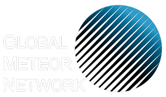

Servizi utili
Strumenti, previsioni e misurazioni
Meteo Pola
Pljusak.com
Libri
Ricerca nel catalogo della biblioteca
Spot the Asteroid
Trova l'asteroide nell'immagine

Stato telecamera GMN
Global Meteor Network
Cosa possiamo vedere nel cielo?
Oggetti visibili stasera
Calendario
Eventi e attività